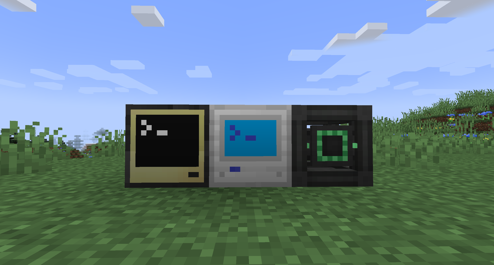
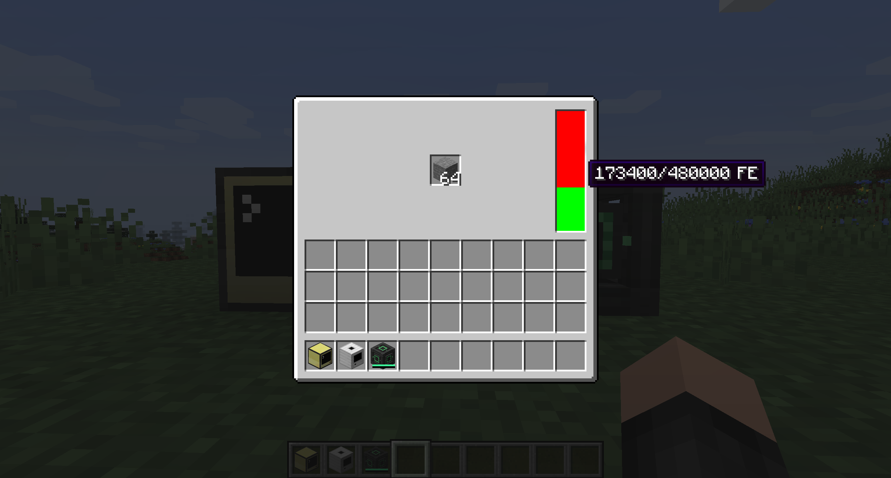
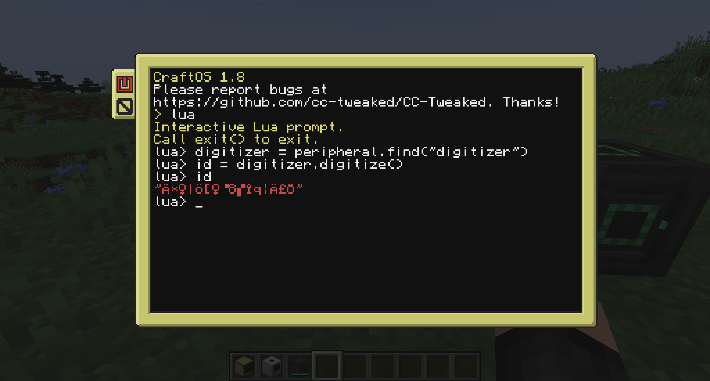

Digital Items 3.0¶
This project is the successor to the original Digital Items 2 mod.
There is no significat diferrences from Digital Items 2, but all things related to energy consumption are not implemented yet.
This mod allows you to turn your items into numbers (called IDs), which you can store or send to your friends and then turn them back into their item form.
Every ID is unique, can't be guessed, and can only be used once.
No duplication or cloning of items is possible.
The process of turning an item into an ID is called 'digitization' and turning it back is called 'rematerialization'.
Items that are digitized begin to 'decay'. If they are left digitized for too long, they are gone.
You can reset their 'decay countdown' by 'refreshing' an item ID or partially rematerializing it.
You can retrieve information about digitized items via their ID and items inside the digitizer itself.
All of these operations are performed inside the 'digitizer', and require a configurable amount of energy.
These operations are exposed in the form of a peripheral for the CC: Tweaked mod.
Supported versions¶
Forge: 1.20.x (features)
Fabric: 1.20.x (features)
Q. & A.¶
How do I use this mod?¶
Place a digitizer and computer (either directly next to one another or connected with network cables and modems).

Place the item you want to digitize inside the digitizer.

Now you can interact with the digitizer with lua.

Use digitizer = peripheral.find("digitizer") to find the peripheral and bind it to the digitizer variable.
The following methods are available to call on the digitizer peripheral:
- inventory methods from CC:T to make it will like actual inventory peripheral
getDecayEnabled()Returns whether the digital items decay.getDecayTicks()Returns the duration in ticks after which digital items decay.digitize()Digitizes the item stack and returns the ID.digitizeAmount(amount)Likedigitize()but only digitizesamountitems leaving the rest in the digitizer.rematerialize(id)Rematerializes the item stack associated with the provided ID and places it inside the digitizer.rematerializeAmount(id, amount)Likerematerialize(id)but only rematerializesamountitems. Resets the decay countdown for the remaining stack.refresh(id)Refreshes the item stack associated with that ID.getIDInfo(id)Returns a table containingcurrentTime(current world age in ticks),digitizedAt(time when the item stack got digitized),decaysAt(time when the item stack will decay),lastRefresh(time when the item stack got last refreshed) anditemcontaining information about the actual item stack.
Is it compatible with the original mod?¶
Nope